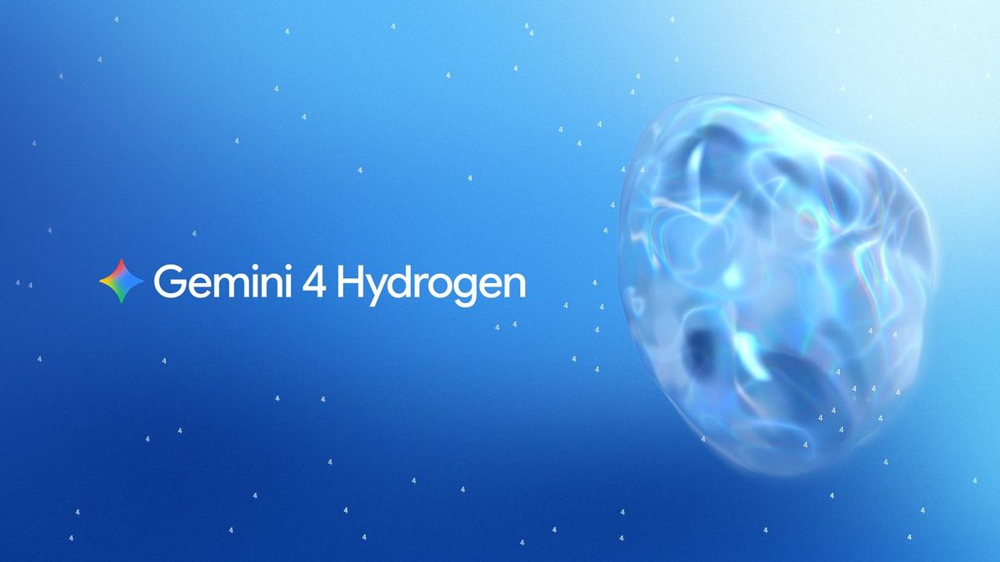
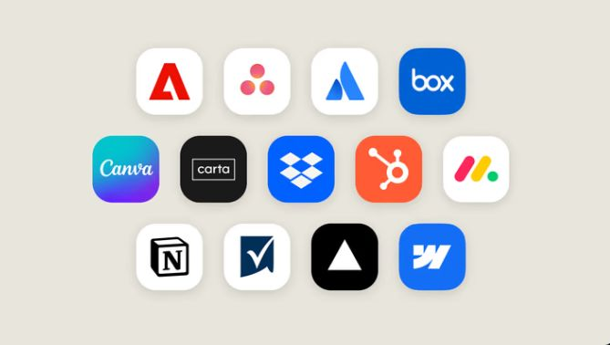
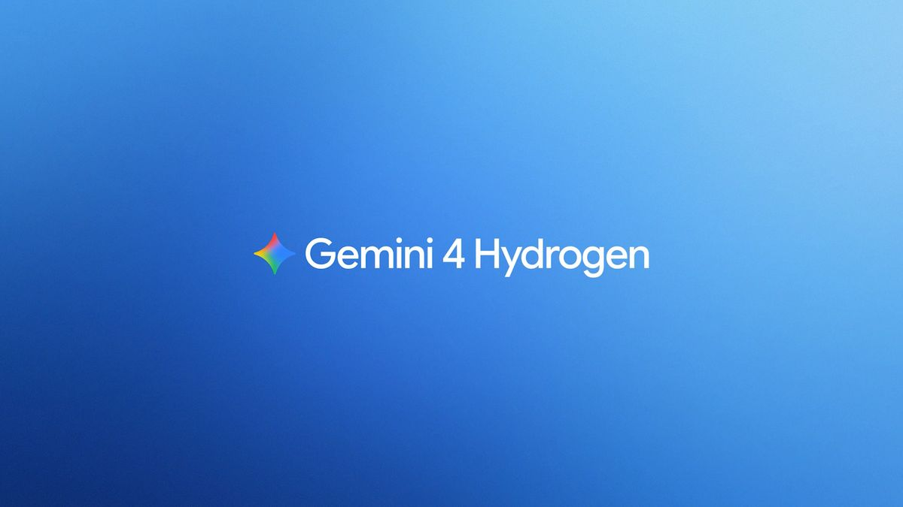
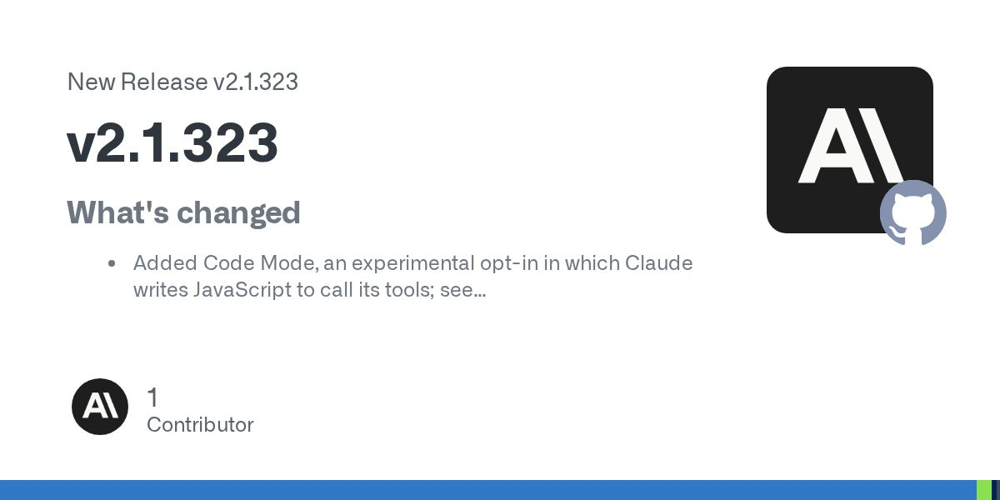
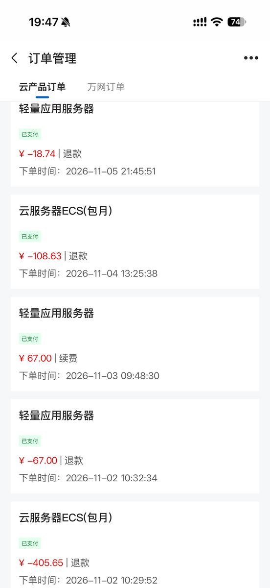
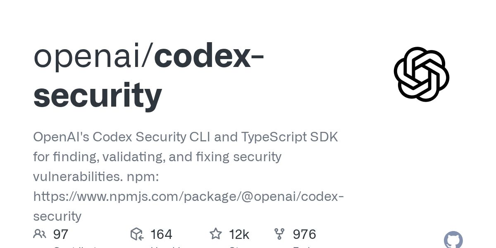
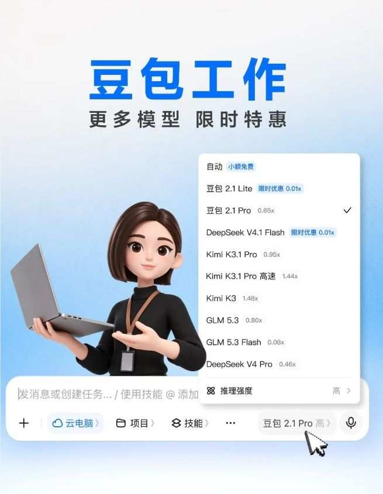

Gemini 4 Hydrogen 发布。

面向 AI 初学者的每日资讯：要闻、工具、项目与需求动态。
最新一期
时间窗口：11-12 08:00 到 11-13 08:20（台北时间）。已与前 7 期去重，每条均核对正文与日期。

交易金额约 75 至 80 亿美元；OpenRouter 通过统一 API 接入 400 多款模型。AI工具集（11-12）

在豆包 2.1 Lite 与 Pro 之外，新增 Kimi K3.1 Pro、GLM 5.3、DeepSeek V4.1 Flash 等可选模型，并标注各模型的额度消耗倍率；简单小额任务继续免费，新用户登录电脑版可领取 30 天订阅权益。AIbase（11-12 17:58）
生成速度为旗舰版的两倍，720P 约 0.99 元/秒，比 Seedance 2.5 低约 34%；单段最长 30 秒，最多输入 10 张图片、5 段视频与 5 段音频。即梦、LibTV 等平台陆续上线，API 于 11-15 登陆火山方舟。AIbase（11-12 17:58）

Asana、Canva、Dropbox、monday.com 等工具可在对话旁打开或展开到全屏，Claude 的修改实时显示在工具中；网页版与桌面版正向所有套餐逐步推送。AIbase（11-12 18:05）

在同一会话中动态切换模型，由 Carbon 负责规划、Hydrogen 负责编写代码与运行测试；官方称在 Terminal-Bench 4.1 上成功率接近单用 Carbon，平均少用 24% 额度、快 19%。Antigravity（11-12）

新增实验性 Code Mode（由 Claude 编写 JavaScript 调用工具，需手动开启），Artifact 支持上传 .docx 文件。Release（11-13 06:12）

楼主称阿里云标称峰值 200Mbps 的机器实际常常只能跑到约 1Mbps，于是让 Codex 用约一小时把三四台机器、十来个服务迁到腾讯云，只用了不到 5% 的额度（楼主自述）。V2EX（11-12 19:52）
一家电商公司投入 2000 多万元做出完整系统后清算，合伙人总结：AI 导购做出来了，但没有转化成购买，「功能热，需求冷」；多商户入驻体系在冷启动阶段是纯负担。帖子有 38 条回复。V2EX（11-12 16:39）

以下是本期项目及单日新增星数。
希望用 AI Agent 提升行政、财务、人事、会议纪要与任务跟进等场景的效率；初期使用成熟的公有云平台和 API，不考虑本地部署，要求有为公司搭建 Agent 项目的实际经验。帖子未写预算。V2EX（11-12 22:23）
后端接口、WebSocket 网关与文档已完成，需求为工作台、消息、个人中心三个页面，并负责 iOS 与华为、小米、OPPO、vivo 应用市场上架及离线推送配置；远程开发，按里程碑付款，支持第三方担保交易，帖子未写预算。电鸭（11-12 16:19）
楼主不懂代码，用 WorkBuddy 做了简单原型，询问让一款软件落地需要多少钱、多少人，一名美工加一名高级程序员配合 AI 能否完成。电鸭（11-12 08:38）


Cursor Changelog 最新一条为 11-06，Anthropic News 窗口内无新内容；Codex 0.168.0 正式版没有更新说明；电鸭改用帖子接口核验正文与时间。